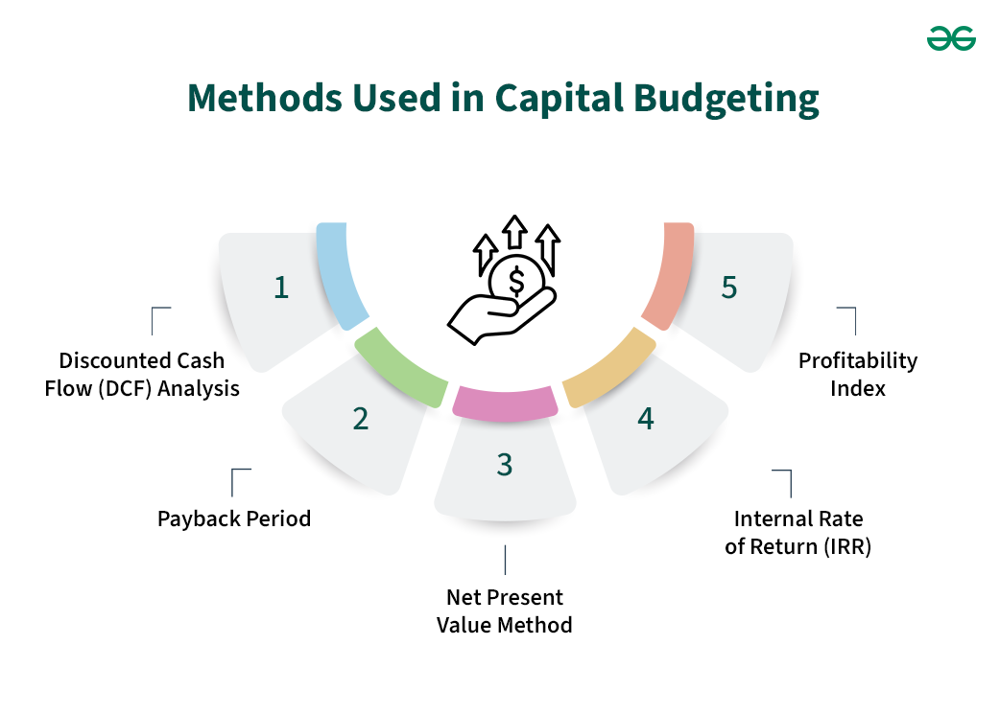

Capital Budgeting
Learn the planning process organizations use to evaluate and choose long-term investments, such as new equipment or building a plant, to maximize future returns.

Capital budgeting is the process a corporation uses to evaluate, prioritize, and select long-term, capital-intensive investment projects.
Unlike short-term operational expenses (like buying raw materials or paying utility bills), capital budgeting deals with long-term capital expenditures (CapEx), such as purchasing heavy machinery, building new factories, launching new product lines, or acquiring another company, that impact the business over multiple years.
The Core Objective: Maximizing Shareholder Wealth
Every capital budgeting decision aims to answer one core question: Will this investment generate
more value than it costs?
Because capital resources are finite, corporate managers cannot pursue every idea. Capital budgeting
provides a structured framework to deploy cash into projects that earn a return higher than the
company's cost of capital (WACC).
The Capital Budgeting Process Step-by-Step
Step 1: Idea Generation & Project Identification
Sourcing potential projects from operations, R&D, or market expansion strategies.
Step 2: Cash Flow Estimation
Forecasting incremental cash inflows and outflows over the project's entire lifespan (accounting for
initial CapEx, working capital requirements, operating revenues, expenses, and terminal salvage
value).
Step 3: Risk & Discount Rate Assessment
Determining the appropriate discount rate reflecting the project's risk profile (usually starting
from the firm's WACC and adding a risk premium for volatile ventures).
Step 4: Valuation & Evaluation
Applying quantitative capital budgeting techniques to accept or reject projects.
Step 5: Post-Audit & Monitoring
Comparing actual cash flow performance against initial forecasts to refine future planning.
Key Capital Budgeting Evaluation Methods
Net Present Value (NPV): The Gold Standard
Calculates the sum of all future cash inflows discounted back to their present value, minus the
initial cash outlay.
Internal Rate of Return (IRR)
The exact discount rate that makes the NPV of all project cash flows equal to zero.
* Decision Rule: Accept project if IRR> Cost of Capital (WACC).
Payback Period
Measures the number of years required for a project's cash inflows to recover the initial investment.
* Decision Rule: Accept if the payback period is shorter than a target threshold. (Focuses on liquidity rather than value creation).
Profitability Index (PI)
Calculates the ratio of the present value of future cash flows to the initial investment (PV of Inflows / Initial Outlay). * Decision Rule: Accept if PI > 1.0 (ideal for ranking projects under capital rationing).
Capital Budgeting Example: Factory Expansion
Imagine a company evaluates spending $1,000,000 today on a new production line expected to generate
$350,000 per year for 4 years. The company's WACC is 8%.
Year 0: -$1,000,000 (Initial Outlay)
Year 1: +$324,074 (PV of $350k at 8%)
Year 2: +$300,069 (PV of $350k at 8%)
Year 3: +$277,841 (PV of $350k at 8%)
Year 4: +$257,261 (PV of $350k at 8%)
Total Present Value of Inflows = $1,159,245
NPV = $1,159,245 - $1,000,000 = +$159,245
Result: Since the NPV is positive (+$159,245), the expansion adds $159,245 of real value to the
company today and should be accepted.
📝 Practice Quiz & Submodule Check
Complete all questions to unlock Submodule 2.4Answer the multiple-choice questions below. Scoring a perfect score will automatically mark this submodule as completed!